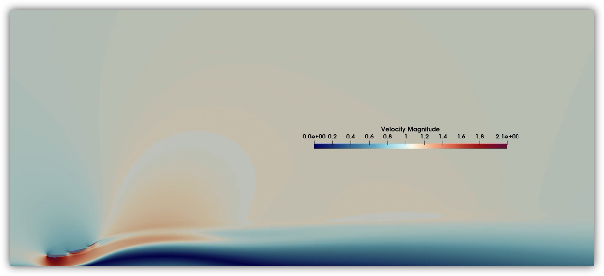
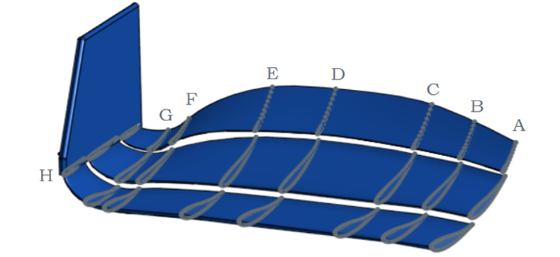
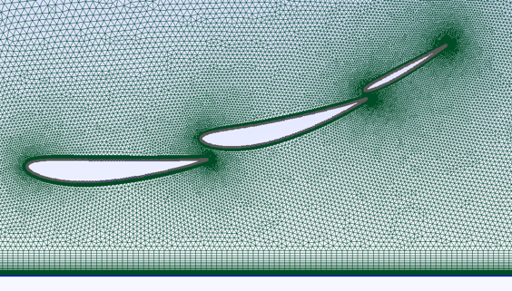
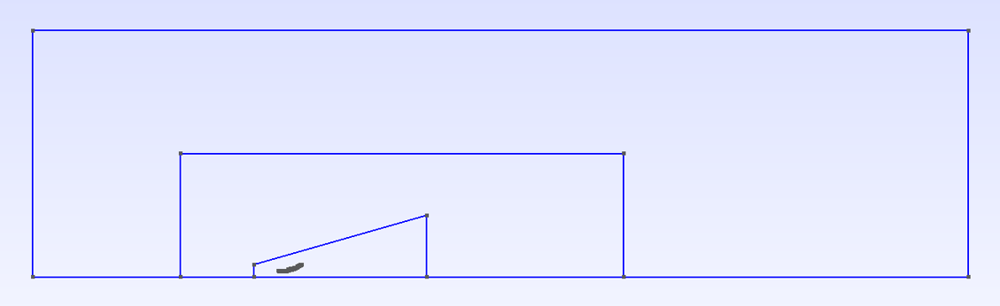

CFD · SU2 · Motorsport · Politecnico di Milano · A.A. 2024–2025
2D compressible RANS/URANS simulations of a 2022 Formula 1 front wing — comparing steady ground effect with the unsteady aerodynamics of porpoising.
Overview
This CFD project analyzed the aerodynamic behavior of a 2022 Formula 1 front wing in two conditions: stationary ground effect, and the porpoising phenomenon — the repetitive vertical oscillation at 4–8 Hz that plagued several F1 teams in 2022.
Using the open-source solver SU2, we ran 2D compressible simulations on a three-element wing based on NACA profiles (4412, 6412, 2410), modeled after Section D of the 2022 FIA-compliant front wing geometry. The ground was modeled as a moving wall at freestream velocity to correctly simulate the ground effect.
The steady case used compressible RANS equations; the porpoising case adopted a URANS formulation with dual time-stepping, imposing a 6 Hz plunging motion with 5 cm peak-to-peak amplitude.

2022 F1 front wing — Section D selected for 2D analysis
Solver
SU2 (open-source)
Flow regime
Compressible, Ma = 0.176 (60 m/s)
Reynolds number
Re ≈ 9.05 × 10⁵
Turbulence model
Spalart-Allmaras (SA)
Steady case
2D compressible RANS
Unsteady case
URANS + dual time-stepping
Porpoising frequency
6 Hz · 5 cm peak-to-peak
Wing profiles
NACA 4412 · 6412 · 2410

Hybrid mesh — structured boundary layer + unstructured farfield
Mesh & Setup
The computational domain used a rectangular farfield configuration with two refinement boxes — one broad rectangular zone around the wing, and a trapezoidal zone in close proximity to the profiles for near-field accuracy.
The mesh combined structured quadrilateral elements in the boundary layer (y⁺ = 1 at all surfaces) with an unstructured triangular grid in the farfield. This hybrid approach balanced accuracy in viscous regions with computational efficiency in the outer domain.
Mesh, farfield, and time convergence analyses were performed systematically to validate the setup before running the porpoising simulation.

Computational domain — rectangular farfield with two refinement boxes
Key findings
The comparison between steady-state ground effect and the porpoising simulation revealed the severe aerodynamic penalty of the bouncing phenomenon. The cyclic variation in ground clearance drives the wing through alternating phases of high and low downforce, degrading overall efficiency.
Average downforce (CL)
−54% vs steady
Rapid ground clearance variations cause alternating high/low downforce phases. The time-averaged lift is approximately halved.
Average drag (CD)
+79% vs steady
Oscillatory motion increases turbulence and viscous losses. Drag nearly doubles compared to the stationary case.
Flow at lower peak
Wing closest to ground — maximum flow acceleration beneath profiles, strong pressure gradients, highest risk of flow separation at leading and trailing edges.
Flow at upper peak
Wing farthest from ground — shorter wake, reduced ground interaction, lower induced drag. Flow is more uniform above and below profiles.
Velocity magnitude field — unsteady URANS simulation during porpoising oscillation
Methodology note
Both the Spalart-Allmaras (SA) and SST k-ω turbulence models were evaluated. The SST model showed marginally better accuracy in capturing flow separation near leading and trailing edges, but at higher computational cost. The relative error between the two models on CL was below 1.1%.
Given the high computational demand of the URANS porpoising simulation, the SA model was selected for the unsteady analysis — a deliberate trade-off between fidelity and computational efficiency that is standard practice in applied CFD.
Future extensions of this work could incorporate 3D simulations and aeroelastic effects to capture the full complexity of the porpoising phenomenon in real racing conditions.